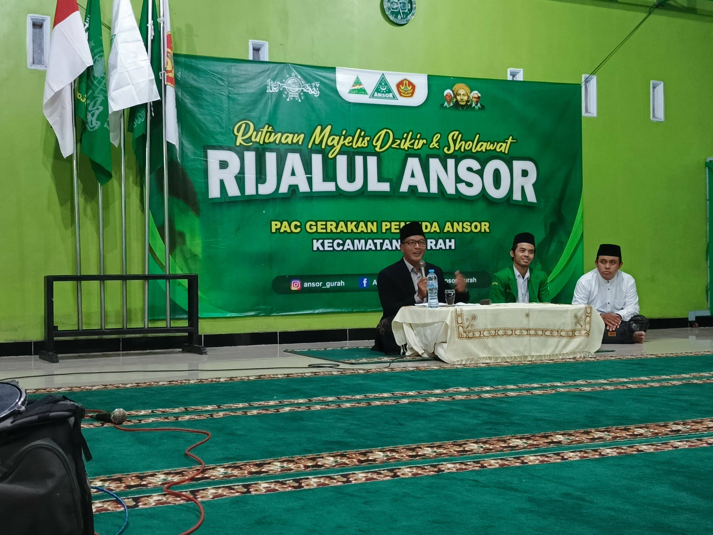
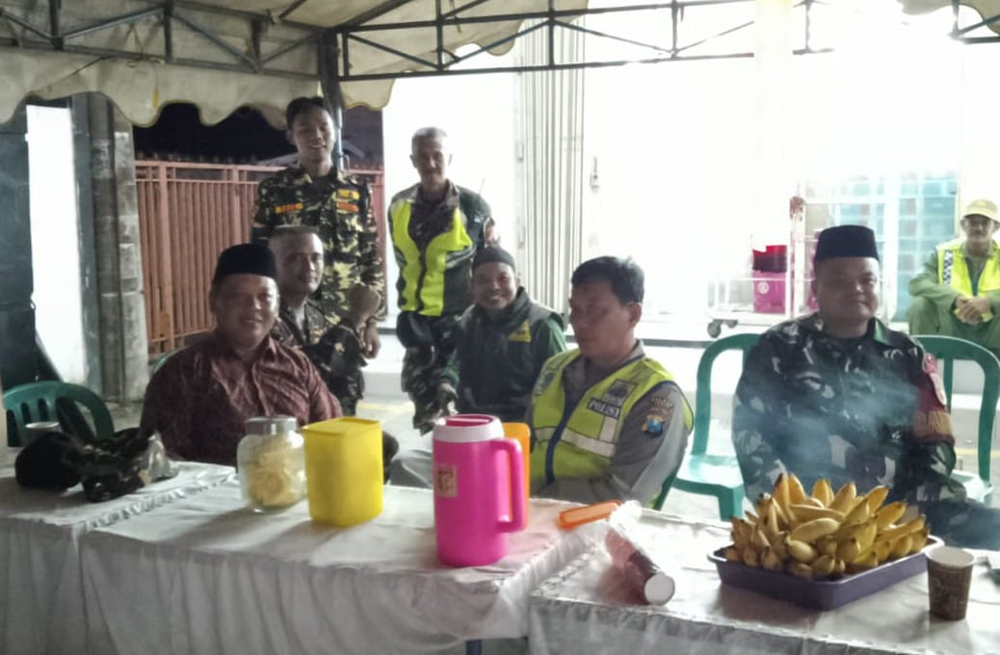
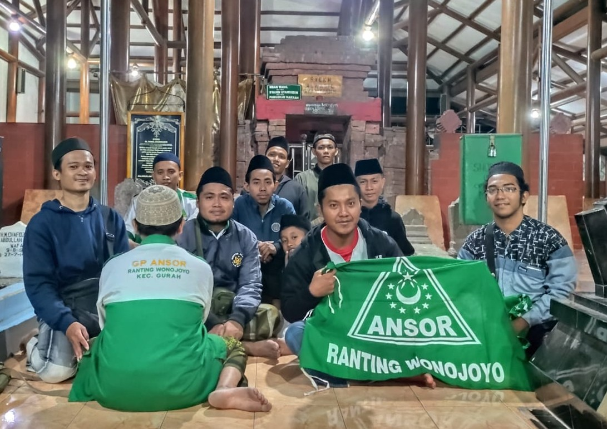
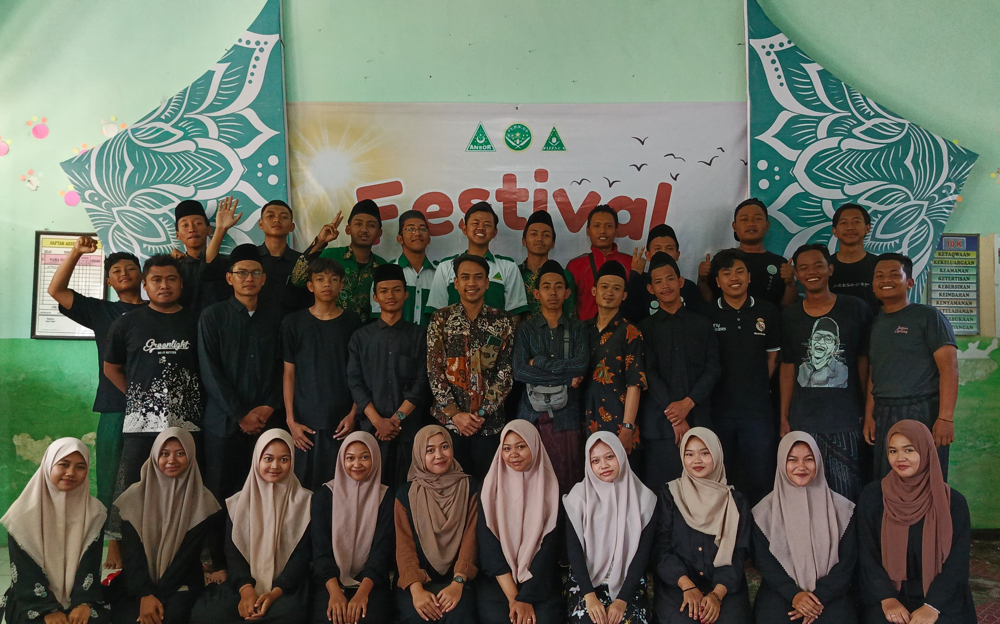

Program

Rijalul Ansor
Menjaga Akidah Ahlussunnah wal Jamaah dengan Penganjian Rutin Setiap 2 Bulan Sekali diisi dengan ngaji kitab Aswaja

Barisan Ansor Serbaguna (BANSER)
Membantu Keamanan masyarakat sekaligus menjadi garda terdepan Nahdlatul Ulama.

Ziarah Rutin
Sebagai pengingat sejarah sekaligus mengenang jasa para Ulama yang telah memperjuangkan Agama Islam di Nusantara.

Diskusi Rutin
Sebagai ajang untuk mempererat silaturrahim serta mempersiapkan agenda mendatang.

Diklat dan Pelatihan
Berperan Aktif dalam mengedukasi masyarakat dan pemuda dengan mengadakan Diklat dan Pelatihan.

Kolaborasi dengan IPNU-IPPNU
Bersama IPNU-IPPNU Berkolaborasi untuk menata kader yang akan meneruskan perjuangan Nahdlatul Ulama dalam Menjaga akidah Ahlussunnah Wal Jamaah